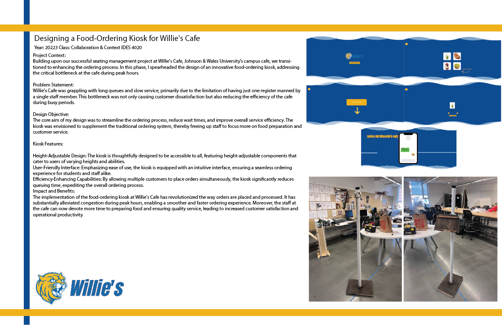

The M.A.R.T.I.A.N Bot
Capstone project: an 8-legged autonomous robot that builds underground habitats on Mars using locally sourced regolith, with topology-optimized structure and a 5-step DIG construction workflow. - 5-step autonomous DIG system
Product Designer — Innovator — R&D Engineer
I design and prototype new solutions across manufacturing, aerospace, robotics, medical devices, and emerging technologies. My focus: translating complex problems into elegant, human-centered products that measurably improve how we work and live.
Seeking: Product Design, Industrial Design, Design R&D, and Technical Leadership roles where I can drive innovation from concept through production.
Recognition
JWU Symposium recognition for M.A.R.T.I.A.N. Construction Robot (Technology & Innovation) and team project BloominBeds (Creativity & Design). Dean's List, 2020–2024.
Capstone project: an 8-legged autonomous robot that builds underground habitats on Mars using locally sourced regolith, with topology-optimized structure and a 5-step DIG construction workflow. - 5-step autonomous DIG system

Investigated multi-axis toolpath strategies to slash support-material waste, comparing 3-axis and 5-axis prints across geometry complexity and material usage. - 40% waste reduction target

Built a Raspberry Pi monitoring system with DHT22 sensors and a live web dashboard to keep raised garden beds within healthy temperature and humidity ranges year-round. - Live climate monitoring automation

Designed and built a fully offline, multi-modal AI platform with multi-GPU inference, RAG memory, voice, image generation, and an OpenAI-compatible API-all running on local hardware. - 100% local inference pipeline

User-centered ergonomic add-on for lab micropipettes-designed with and for a real client with rheumatoid arthritis, selected via comparative user testing across three prototypes. - 3 concepts validated with users

Parametric Grasshopper/Rhino simulation of deployable electromagnetic devices that recreate Earth's magnetosphere to shield Mars habitats from cosmic radiation. - Radiation shielding concept simulation

Data-driven seating analysis at a university cafe-camera-based observation, Revit modelling, and ADA-compliant redesign proposals backed by a week of quantitative data. - Week-long usage study

Grasshopper/Rhino parametric simulation that grows organic vine-like structures across any 3D model surface using collision detection and bouncy solvers. - Multi-surface growth behavior

Two product explorations in personal storage: a modular stackable system and a wearable hands-free carry unit. - 2 concept families developed

Full business feasibility study for a luxury vehicle-to-mobile-home conversion shop-market research, tiered pricing, $2M startup plan, and competitive analysis. - $2M startup model mapped

Apparel brand identity and graphics system - logos, graphic motifs, shirts, shorts, sports bras, and web assets for a high-intensity motivation brand. - Complete brand kit launch
Map user needs, constraints, and measurable goals.
Generate focused concepts and test feasibility rapidly.
Build functional prototypes for hands-on evaluation.
Validate with data, iterate, and prepare for delivery.